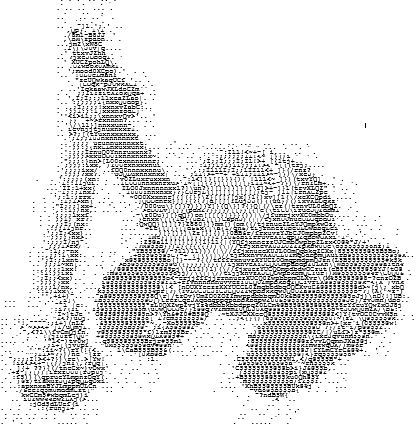
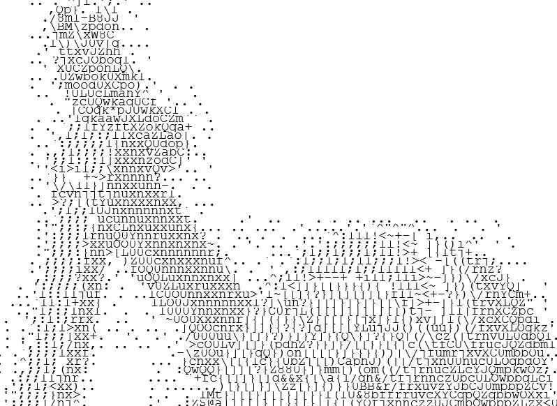
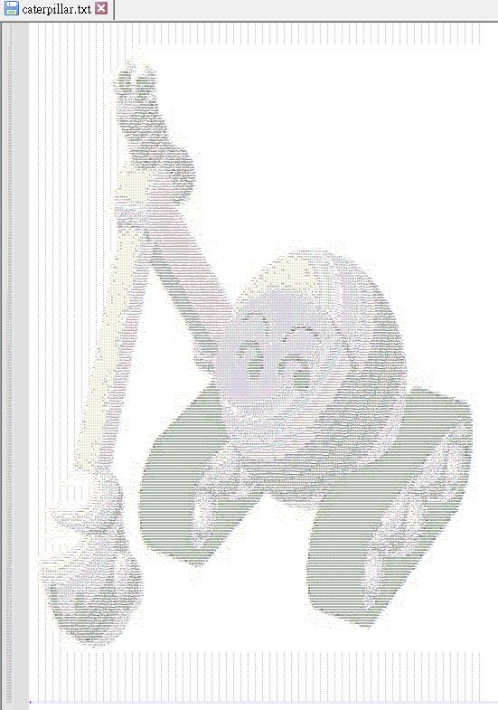
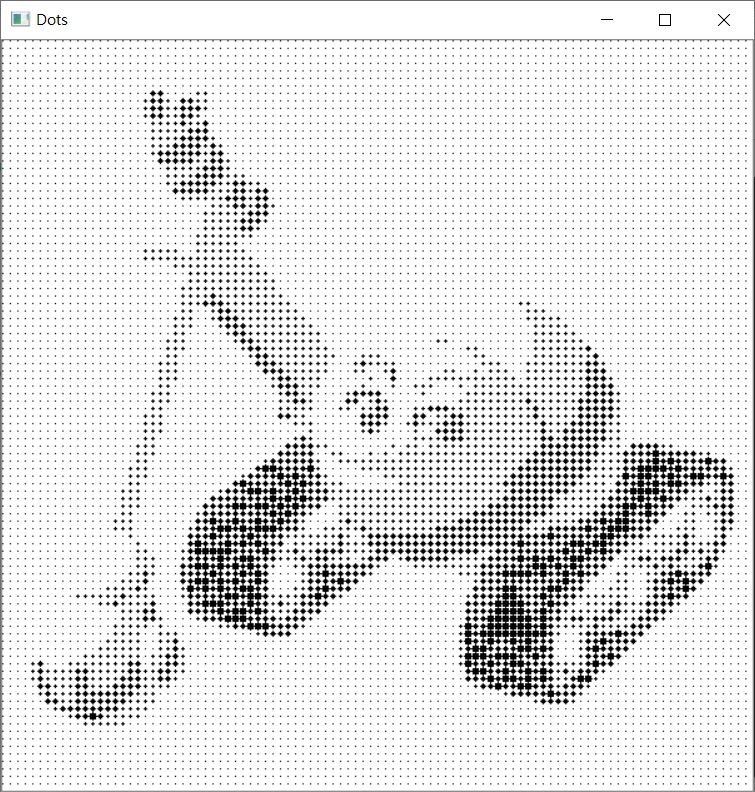

在早期沒有圖形介面時，或者是在打字機上，若要顯示圖像，一種方式是透過 ASCII 可見字元的組合來呈現圖像內容，在圖形介面早就普及的現在，這種顯示圖像的方式被作為一種文字藝術，稱為 ASCII Art，例如：

顯示 ASCII Art 時，建議使用等寬字型，並調整適當行距，上圖是從 100 x 100 的圖片產生，將上圖放大來看，可觀察到都是 ASCII 可見字元：

要撰寫程式產生這樣的文字藝術並不難，最主要的，是將 ASCII 可見字元排列一下：
ASCII = '$@B%8&WM#*oahkbdpqwmZO0QLCJUYXzcvunxrjft/\|()1{}[]?-_+~<>i!lI;:,"^`\'. '
可以看到，左邊的字元複雜度比較高，右邊的字元複雜度比較低，若遠遠地看 ASCII Art 文字圖，就像個灰階圖片，這表示灰階值高的像素可以對應至右邊字元，灰階值低的像素可以對應至左邊字元，也就是說，實際上也不一定要用 ASCII 字元，只要依字元的複雜度排列，並對應灰階值就可以了。
就上面的 ASCII 來說，長度為 70，基本上就是將 0 到 255 共 256 個值，對應至 0 到 69 共 70 個值，如果要讓產生的圖的雜訊更少一些，可以稍微偏移一些，讓灰階值高的部份，儘量對應至右邊字元，例如下例的 UNIT 在計算時，偏移至 257：
ASCII = '$@B%8&WM#*oahkbdpqwmZO0QLCJUYXzcvunxrjft/\|()1{}[]?-_+~<>i!lI;:,"^`\'. '
UNIT = 257 / len(ASCII)
def to_ascii_art(gray):
return ASCII[int(gray / UNIT)]
結合 NumPy 與 OpenCV 的話，就只要撰寫以下的程式：
import cv2
import numpy as np
ASCII = '$@B%8&WM#*oahkbdpqwmZO0QLCJUYXzcvunxrjft/\|()1{}[]?-_+~<>i!lI;:,"^`\'. '
UNIT = 257 / len(ASCII)
def to_ascii_art(gray):
return ASCII[int(gray / UNIT)]
to_ascii_art = np.frompyfunc(to_ascii_art, 1, 1)
img = cv2.imread('caterpillar.jpg', cv2.IMREAD_GRAYSCALE)
ascii_art = to_ascii_art(img)
剩下的就是看你要將 ascii_art 輸出為什麼了，例如輸出為 .txt：
with open('caterpillar.txt', 'w') as f:
for row in ascii_art:
f.write(''.join(row) + '\n')
以 250 x 250 的圖片產生的文字內容，就會像是：

當然，灰階度也不一定要來產生對應的字元，也可以是對應的大小圖案，例如圓：
import cv2
import numpy as np
img = cv2.imread('caterpillar_100x100.jpg', cv2.IMREAD_GRAYSCALE)
height, width = img.shape
max_r = 3
factor = max_r * 2
# 繪圖用
dots = np.zeros((height * factor, width * factor))
# 背景白色
dots.fill(255)
for y in range(height):
for x in range(width):
# 繪圓
cv2.circle(
dots, # 目標圖片
(x * factor, y * factor), # 圓心
int((255 - img[y, x]) / 255 * max_r) , # 半徑（幾個像素，也就是要整數）
(0, 0, 0), # BGR
-1 # 框線大小，-1 表示填滿
)
cv2.imshow('Dots', dots)
cv2.waitKey(0)
cv2.destroyAllWindows()
這會產生以下的圖片：
